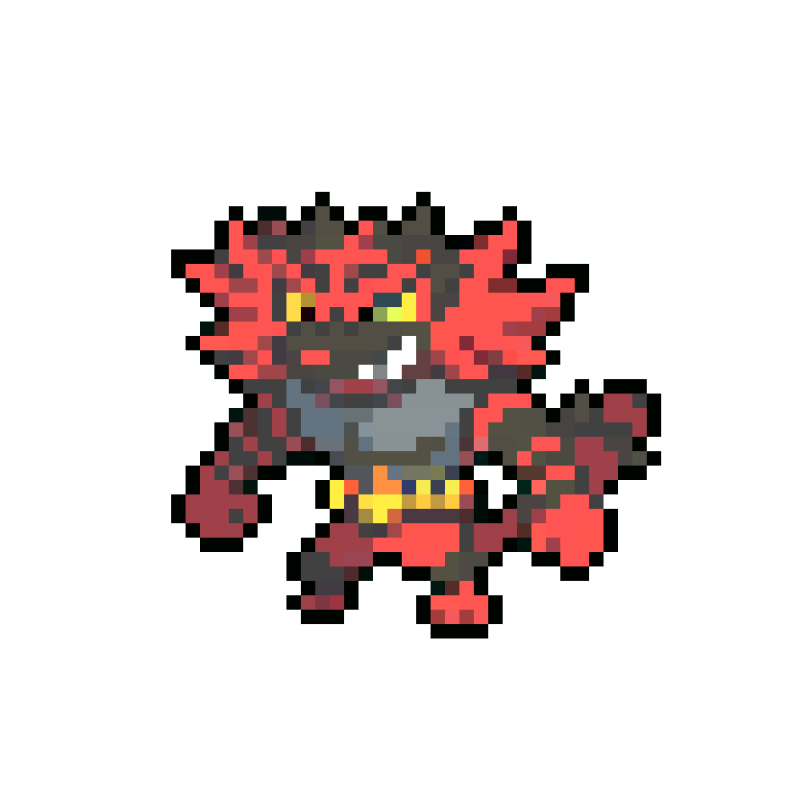

Incineroar is a fire/dark type Pokémon. It is based on a professional wrestling "heel"—a villain who plays dirty to get a reaction—which explains its Dark typing. Its evolution line includes Litten and Torracat.
